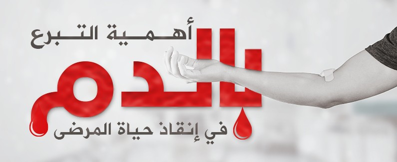

<section class="text-gray-600 body-font">
    <div class="container mx-auto flex px-5 py-24 items-center justify-center flex-col">
        
        <div class="text-center lg:w-2/3 w-full">
            <h1 class="title-font sm:text-4xl text-3xl mb-4 font-medium text-gray-900">انا تبرعت بالدم و انتي وقتاه</h1>
            <p class="mb-8 leading-relaxed">التبرع بالدم هو إجراءٌ طبي يتم فيه نقل الدم من شخص سليم معافى طوعاً إلى شخص مريض محتاج للدم. يستخدم ذلك الدم في عمليات نقل الدم كاملا أو بأحد مكوناته فقط بعد فصلها؛ وذلك عن طريق عملية تسمى التجزيء.

                يُجرى التبرع بالدم عن طريق جمع الدم في كيس طبي يحتوي على مادة مانعة للتجلط متصل بأبرة معقمة تستعمل لمرة واحدة فقط توصل من الوريد في الذراع، وتتم عملية التبرع بالدم في فترة زمنية مدتها بين 5 إلى 10 دقائق -في هذه الفترة- يكون المتبرع تحت الرعاية الطبية المباشرة. يتم أخذ 400 إلى 450 مليلترا، وهو ما يمثل حوالي 1/12 من حجم الدم الموجود داخل جسم كل إنسان، والذي يتراوح بين 5 إلى 6 لترات. يمكن معاودة التبرع بالدم كل 56 يوما بينما تشترط بعض بنوك الدم مدة 3 شهور على الأقل، يجب أن يكون المتبرع في وضع صحي لائق ليقبل تبرعه دون التأثير سلبا على صحته. يجب أن يبقى المتبرع على سرير التبرع لمدة 5 دقائق تحت الملاحظة الطبية ويسمح له بالجلوس بعد التأكد من حالته الطبية. بعد ذلك، يتم توفير وجبة صغيرة (غالبا تتكون من عصير وبسكويت) للمتبرع.</p>
            <div class="flex justify-center">
                <!-- Contenu supplémentaire ici -->
            </div>
        </div>
    </div>
</section>

